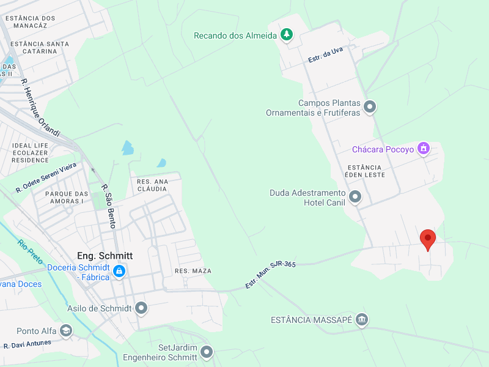

Como Ajudar?
Atualmente os animais comem em média 5 sacos de ração por dia, fora as medicações e vacinas. O local é limpo todos os dias pois é um ambiente ao céu livre, diarreias, mosquitos da dengue e carrapatos. E, para mantermos o abrigo nessas condições, precisamos da sua ajuda!

💝 Faça sua doação
Para manter o abrigo e os cães nesses cuidados, contamos com a sua doação! Qualquer valor já ajuda com gastos totalmente diários com cães de resgate, vacinas, medicamentos, vermífugos, obesidade, além de funcionários.
📍 Faça uma Visita!

📍 Endereço do abrigo:
ESTRADA DA AMORA 1301
Loteamento EDEM LESTE
Zona Rural de Engenheiro Schmidt
🗺️ Como chegar:
Ao chegar em Schmidt, siga até o final da Rua Coutinho Cavalcanti, onde há um campo de futebol. No fim da rua, contorne a rotatória e entre na estrada de terra à esquerda (Estrada Amora). Maza tem um letreiro grande em frente à entrada da estrada de terra, com uma placa azul com letras brancas escrito Edem Leste.
Siga sempre em frente. Quando avistar um plantio de milho (ou soja), verá uma placa laranja com os dizeres "Bem-vindos ao loteamento Edem Leste".
Essa placa é um mapa. Não suba: continue reto pela Estrada do Cedro.
Logo após subir um morro, há um redutor de velocidade. O abrigo está logo à esquerda após esse morro. Há um letreiro com o nome da ONG.
A entrada do abrigo é na Rua Estrada da Amora, esquina com a Estrada do Cedro. A casa é azul. Evite o caminho alternativo pela estrada com pontilhado azul no mapa.